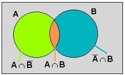

Axiome von Kolmogorow (auch etwa Kolmogorov oder Kolmogoroff)
für Lebenslauf von Kolmogorw: Kolmogorow bei Wikipedia
Axiome der Wahrscheinlichkeitsrechnung
I. Jedem Ereignis E des Stichprobenraumes ist eine reelle Zahl P(E), seine Wahrscheinlichkeit, zugeordnet.
II. Für diese Funktion P: E → P(E), gilt:
- Die Wahrscheinlichkeiten sind nicht negativ: P(E) ≥ 0.
- Die Wahrscheinlichkeit des sicheren Ereingnisses S ist eins: P(S) = 1.
- Die Wahrscheinlichkeit, dass von zwei unvereinbaren Ereignissen entweder das eine oder das andere eintritt, ist gleich der Summe der beiden Wahrscheinlichkeiten: P(A ∪ B) = P(A) + P(B), falls A ∩ B = Ø
Diese Axiome wurden von A.N.Kolmogorow 1933 im Buch "Grundbegriffe der Wahrscheinlichkeitsrechnung" publiziert.
Mit Hilfe dieser Axiome (und den Gesetzen der Mengenlehre) lässt sich z.B. sehr einfach der sog. Additionssatz herleiten:
Additionssatz: Für zwei beliebige Ereignisse A und B gilt:
P(A ∪ B) = P(A) + P(B) - P(A ∩ B)
Beweis: A: Entgegengesetztes Ereignis von A ( A tritt genau dann ein, wenn A nicht eintritt)

P(A) = P(A ∩ B) + P(A
∩ B) → P(A
∩ B) = P(A) - P(A ∩ B)
P(B) = P(A ∩ B) + P(A ∩ B) → P(A ∩ B) = P(B) - P(A ∩ B)
P(A ∪ B) = P(A ∩ B) + P(A ∩ B) + P(A ∩ B)
P(A ∪ B) = P(A) - P(A ∩ B) + P(A ∩ B) + P(B) - P(A ∩ B), also
P(A ∪ B) = P(A) + P(B) - P(A ∩ B)
P(B) = P(A ∩ B) + P(A ∩ B) → P(A ∩ B) = P(B) - P(A ∩ B)
P(A ∪ B) = P(A ∩ B) + P(A ∩ B) + P(A ∩ B)
P(A ∪ B) = P(A) - P(A ∩ B) + P(A ∩ B) + P(B) - P(A ∩ B), also
P(A ∪ B) = P(A) + P(B) - P(A ∩ B)